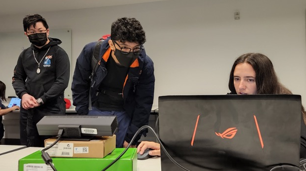

XR Lab.
En enero de 2022 comencé a trabajar para el XR Lab de Bellevue College en Seattle. Este laboratorio está comprometido con la aplicación de nuevas tecnologías mixtas como herramientas para el pensamiento, brindando a los estudiantes oportunidades para aumentar su aprendizaje a través de experiencias inmersivas y multisensoriales.
Aquí he podido compartir mis conocimientos con otros estudiantes pero también trabajar en varios proyectos que van desde galerías virtuales hasta producción de videos y trabajo con drones. Estos son algunos de los proyectos que he realizado:
Aquí se puede encontrar una lista de reproducción con más proyectos y algunas fotos de mi experiencia en la universidad:

